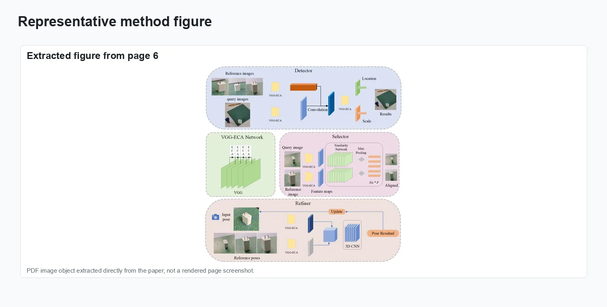
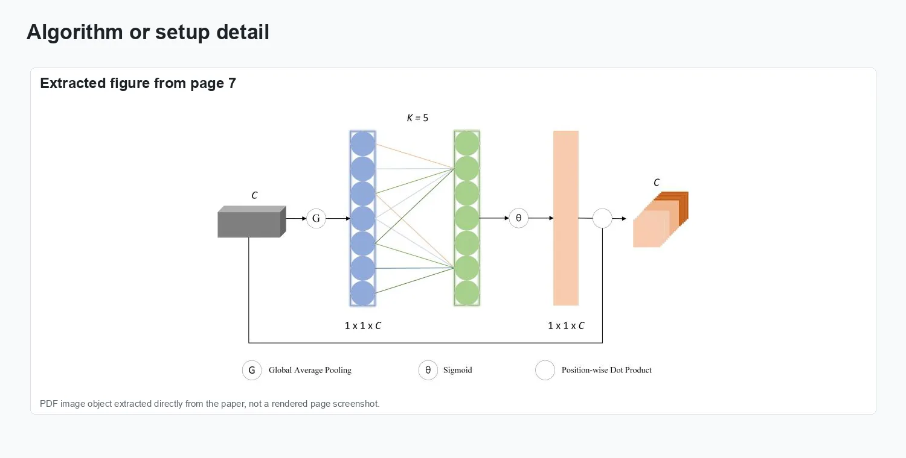
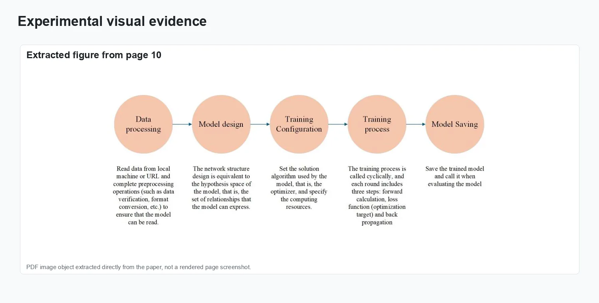
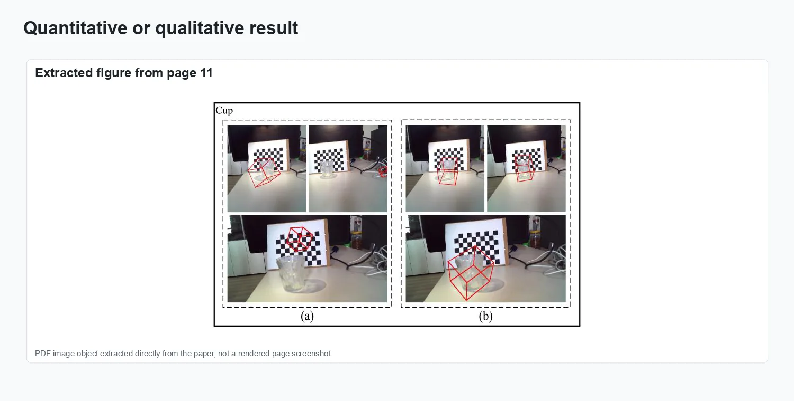
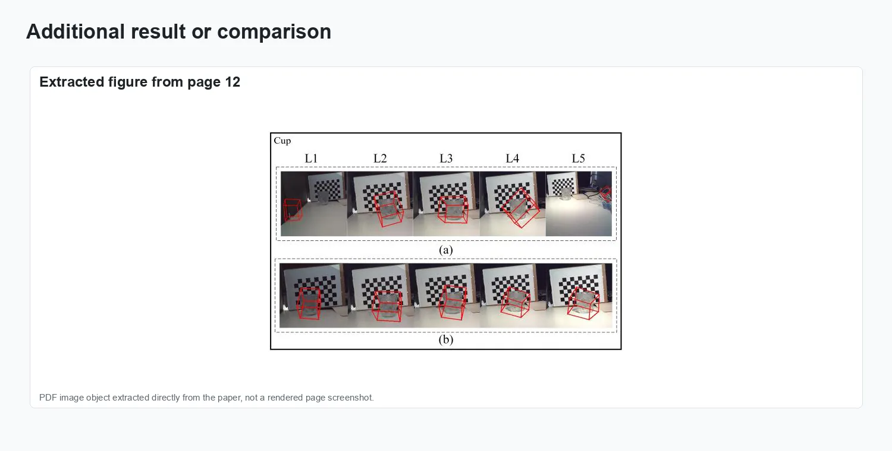

Robust Object 6D Pose Estimation Under High Dynamic Ambient Light

This paper addresses the challenges in object 6D pose estimation caused by illumination changes, proposing an improved Gen6D method for robust operation under high dynamic ambient light conditions. Our approach first utilizes a convolutional neural network (CNN) for 2D object detection. A channel attention mechanism is then integrated to promote inter-channel information exchange and reduce noise, leading to more robust feature representations. We employ a fast image-matching algorithm for initial pose estimation, followed by a 3D CNN to refine the pose.
This work appears in Computer-Aided Design and Applications, 23(4):411-427.
Problem setting
This paper addresses the challenges in object 6D pose estimation caused by illumination changes, proposing an improved Gen6D method for robust operation under high dynamic ambient light conditions. Our approach first utilizes a convolutional neural network (CNN) for 2D object detection. A channel attention mechanism is then integrated to promote inter-channel information exchange and reduce noise, leading to more robust feature representations.
The figures below collect representative visual evidence from Computer-Aided Design and Applications, 23(4):411-427.
Method and visual evidence
The visuals show the attention-enhanced Gen6D pipeline, high-dynamic-light test scenes, and pose-estimation comparisons under changing illumination.

Method overview.

Representation and setup.

Experimental evidence.

Result comparison.

Additional visual result.
Results and impact
The evaluation reported in Computer-Aided Design and Applications, 23(4):411-427 is summarized through the figures above.